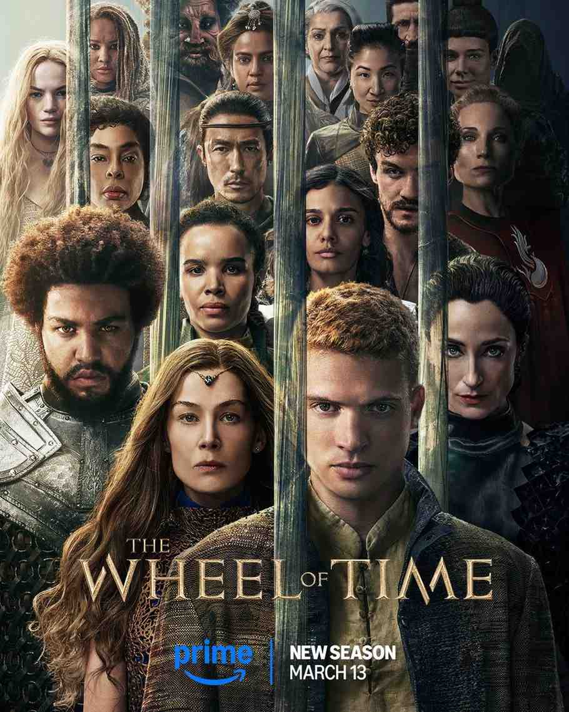

1) The Wheel of Time
The Wheel of Time arrives with the weight of epic fantasy expectations and largely delivers on the promise of Robert Jordan's massive book series. This is high fantasy at full scale: a world where magic exists but comes at terrible cost, where ancient evils stir after centuries of sleep, and where a small group of villagers discover they're caught in prophecies that will reshape everything.
The story follows Moiraine, a member of the powerful all-female Aes Sedai order, as she arrives in a remote village searching for the Dragon Reborn, a prophesied figure who will either save the world or break it. Five young people from the village become her focus, and when dark forces attack, they're forced to flee into a world far larger and more dangerous than they ever imagined. The question of which one might be the Dragon Reborn drives the early tension, but the show quickly expands into something richer: a story about power, destiny, and the costs of both.
What makes The Wheel of Time compelling is its willingness to explore the complexity of magic. The One Power can be wielded by women through the Aes Sedai, but men who touch it go mad, corrupted by an ancient taint. This creates a world where power is gendered, where institutional structures have formed around controlling magic, and where the very thing that might save humanity is also deeply dangerous. The show doesn't shy away from these contradictions. It builds its drama around them.
The production values are ambitious. From the sprawling city of Tar Valon to the haunted ruins of ancient civilizations, the show creates a world that feels lived-in and layered. The costume design, the different cultures, the visual approach to magic all of it works to make this feel like a place with real history and real stakes. It's not perfect; some storylines feel rushed, some character arcs could use more room to breathe. But when it works, it captures that essential fantasy feeling: the sense that you're watching a world with depths you haven't yet explored, where every revelation hints at larger mysteries still waiting.